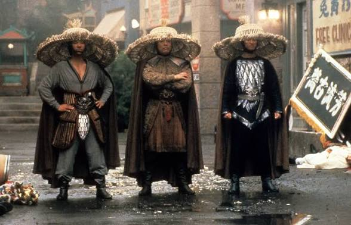

Big Trouble In Little China (1986) — CERTIFIED MGC VF-35

🏛 MGC LOWER COURT OF APPEALS
- ASSET TITLE: Big Trouble in Little China (1986) – The Official Pork-Chop Express Action Ledger
- OFFICIAL REGISTRY GRADE: Certified MGC VF-35 (Choice Very Fine / High-Luster Circulation Wear)
- LOWER COURT JURISDICTION: Judge Tina, Chief of Cult Classics
- CASE FILE: #035
📜 THE FORENSIC NARRATIVE BREAKDOWN & RECOVERY
Tina kicks open the swinging double doors 👢👢 of the basement court, drops a half-eaten box of takeout lo mein 🥡 straight into the bin 🗑️, and slams her heavy wrench down. “Alright, listen up pal! We’ve got ancient Chinese sorcery clogging up my technical filters today, and the Pork-Chop Express just rolled into the loading dock!” 🚛💨
🚨 Key Planchet Flaws:
1. Inverted Character Metallurgy & The Heroic Illusion
The Luster:
Under our strict 5x magnifying lens, the film’s character alloy boasts a brilliant, intentional design choice. The script masterfully subverts the standard 1980s action-hero strike. Kurt Russell’s Jack Burton turns in a towering, high-grade performance—not as an invincible savior, but as a loud-mouthed, heavily circulated sidekick who spends the entire movie trailing behind the actual hero, Wang Chi (Dennis Dun).The Wear:
While this narrative inversion gives the coin spectacular cult appeal and high emotional eye appeal, the execution creates localized friction for mainstream viewers. Jack accidentally knocking himself unconscious by firing a gun into the ceiling right before the final battle is peak comedy-tier scrap metal. It deliberately scuffs standard cinematic tension, capping the asset’s continuous narrative velocity before it can challenge the upper AU registers.
2. Over-Saturated Comic Book Exposure & Mystical SFX Blurring
The Luster:
The visual layout is a glorious, neon-drenched showcase of 1980s practical stunt metallurgy. The introduction of Lo Pan’s mythical underworld, the high-flying martial arts choreography, and the sheer atmospheric grit of San Francisco’s Chinatown provide immense historical luster for collectors of retro fantasy-action cinema.The Wear:
However, sliding the 5x magnifying lens across the final act reveals noticeable surface scuffs in the visual effects arena. The optical neon energy beams, floating eyeball monsters, and the highly uncalibrated, exploding villain prosthetics exhibit clear structural wear and dated alloy fatigue. The special effects matrix frequently bleeds out, resulting in a charmingly scuffed, heavily circulated vintage presentation.
3. Hyper-Fragmented Genre Overdrive (The VF-35 Bottleneck)
The Flaw:
The screenplay structure acts like a runaway freight engine trying to haul four different genres down a single narrow track at maximum velocity.The Forensic Data:
The narrative trajectory attempts to fuse supernatural horror, martial arts, screwball comedy, and western truck-driver exploitation into a single planchet strike. Because the pacing engine refuses to decelerate, the second-act transitions experience a major chronological bottleneck. The audience is dragged from a gritty street-gang hatchet fight straight into a sorcerer’s neon wedding portal without any fluid narrative bleed. It is an incredibly fun, chaotic joyride, but the structural fragmentation is highly visible under magnification, permanently securing the asset at a firm VF-35.
🔍 THE FINAL JUDICIAL DECREE
- Mainstream corporate critics back in 1986 completely misgraded this coin, throwing it into the low-grade junk box because they didn’t understand its inverted character mechanics. The MGC High Court recognizes its exceptional, enduring cult eye appeal, but our strict forensic lens cannot ignore the scuffed visual effects and hyper-fragmented genre overloading.
Tina grabs her gold-mounted claw hammer and brings it down with a thunderous echo against the steel desk! 🔨💥👗
- MGC VF-35 Choice Very Fine Registry Allocation: SUSTAINED. Case Closed.

• © 2026 MOVIE GRADING CONSENSUS. All Sovereign Rights Reserved.